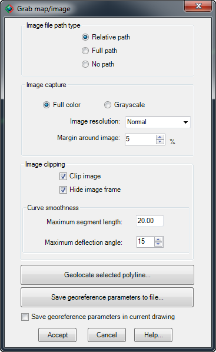

|
|
Toolbar:
Menu: CAD-Earth > Grab map/image
|
|
|
Command line: CE_GRABMAPIMG
Prompts:
Select closed polyline: Specify insertion base point:
CAD-Earth version: Basic, Plus, Premium. |
.png)
.png)
Command description:
Using this command images can be imported from major service providers (Google Earth, Google, Bing, ESRI, Mapbox) in different resolutions (Normal, medium, high, highest) and image modes (satellite, map, hybrid) in full color or grayscale in major image formats (BMP, JPEG, TIFF). This command is intended to be used when a map or image is needed to be inserted in a drawing to show the site location with no scale and without having to georeference the drawing first.
Dialog box settings:

ØArchivo de imagen.
•Ruta relativa. La imagen debe guardarse en un subfolder o en un folder relativo a la ruta donde el archivo de dibujo es guardado.
•Ruta completa. El archivo de imagen será guardado en el folder seleccionado.
•Sin ruta. La imagen debe ser guardada en la misma ruta que el archivo de dibujo o en cualquiera de los directorios de soporte de AutoCAD
ØImage resolution. Image tiles are processed and joined together to increase image detail, covering the closed polyline extents. If the maximum zoom level is reached after subdivision the number of tiles will be adjusted to the maximum allowable. The number of image tiles processed according to image resolution are:
•Normal. One image tile.
•Medium. Up to four image tiles.
•High. Up to sixteen image tiles.
•Highest. Up to sixty four image tiles.
ØMargin around image. Percentage image increase to show more image information around the polygon extents. For example, a 5% margin increases the image extents by 10% in the horizontal and vertical direction (10% for the left an right margin and 10% for the top and bottom margin).
ØImage clipping.
•Clip image. Image will be clipped inside the closed polyline.
•Hide image frame. If the image frame is not visible it will not be printed but the image can't be selected. To turn on the image frame, set the IMAGEFRAME variable to ON (1).
•Curve smoothness. If the closed polyline has curved sides they will be converted to straight segments before the image is clipped. The number of resulting segments will be proportional to the maximum segment length and the maximum deflection angle between consecutive segments specified. If the image will not be clipped or if the closed polyline doesn't have curved segments this option will have no effect.
ØGeolocate selected polyline. Select to place the closed polyline initially selected in a map to define its geolocation. A map will be shown where you can insert, move, rotate an scale the polyline until it is correctly placed.
ØSave georeference parameters to file. A file selection dialog box will be shown to save a DGW text file containing conversion parameter values.The georeference parameters are translation, rotation , scale and EPSG ID.
ØSave georeference parameters in current drawing. Select if you wish to georeference the current drawing and use the parameters defined to convert between drawing and latitude/longitude coordinates by other CAD-Earth commands.
Tips:
•The same image mode you select (satellite, map, hybrid) when geolocating the polyline will be used when the image tiles are processed.
•Select normal resolution to get the same map image as shown on screen. Text and symbols will appear smaller if you select a higher image resolution when importing a map.
•To select the resulting image for editing you the image frame must be visible. To turn on image frame visibility set the IMAGEFRAME variable to ON (1)
•Images are managed as external references in AutoCAD. If you intend to share a DWG where images are attached you must also include the image files, so the image references can be updated. You can use the IMAGE command to manage image references.
•If you select the relative path option you don't have to recreate the image file path in another computer as long as the image files are included in the same folder as the drawing or in a relative folder.
•The drawing must be saved first before you select the relative path option otherwise the image will be created with full path applied.
•If you select the no path option you must save the image file in the same folder as the drawing or in an any AutoCAD support file path.
Related topics:
Copyright © 2023 Arqcom Software
Google Earth© is a registered trademark of Google inc. All other trademarks are the property of their respective owners.